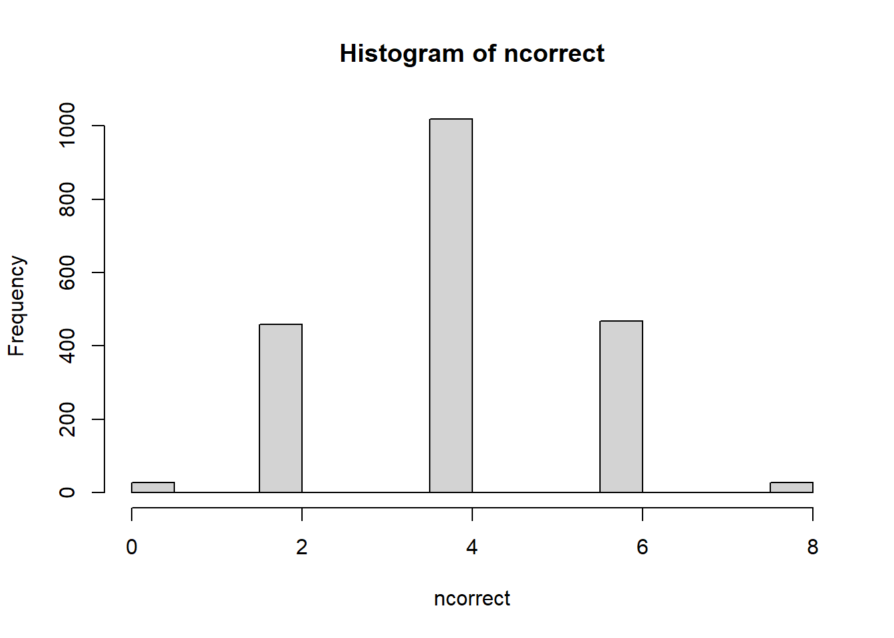
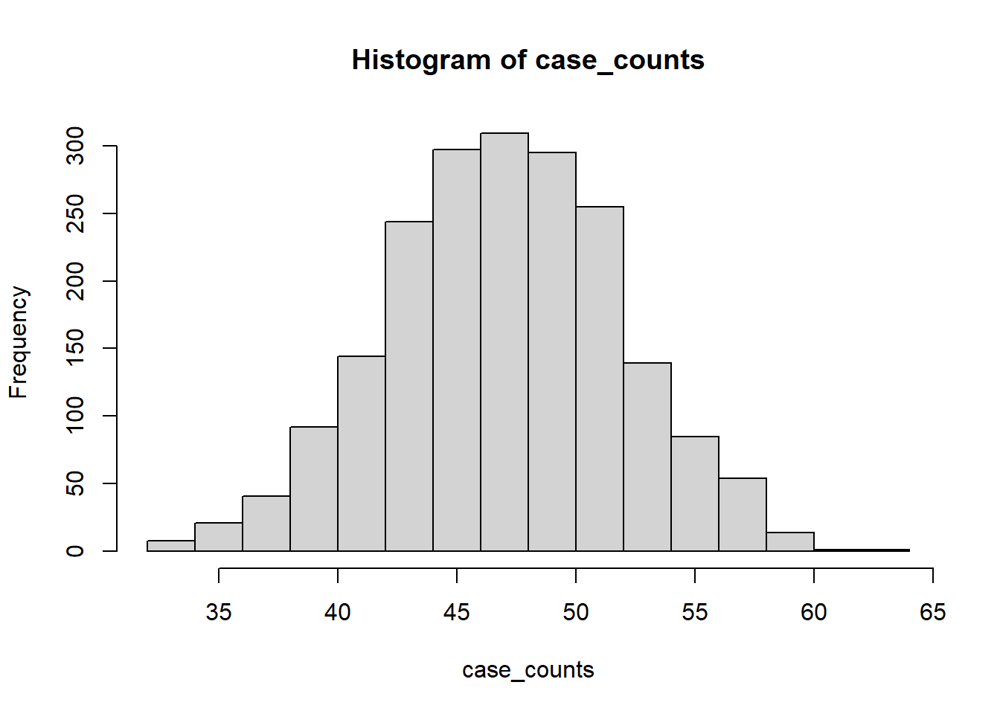
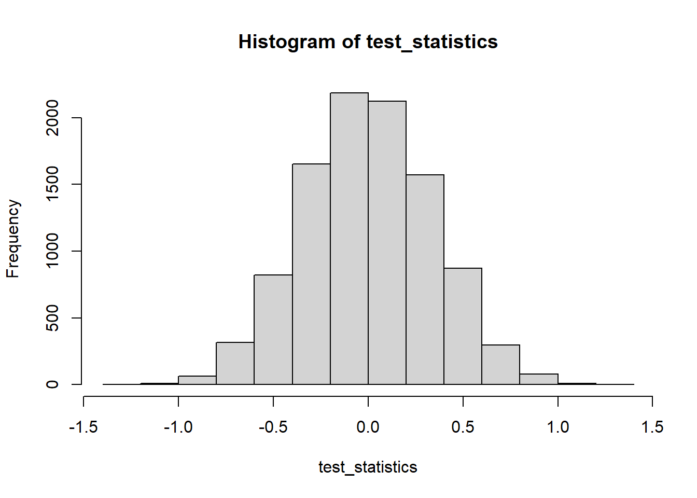

For the next two weeks, we’ll be talking about statistical hypothesis testing. Hypothesis testing is one of the core tasks that we perform as statisticians and data scientists. Most of the time, hypothesis testing is used to answer questions concerning whether or not there is a difference between two groups (e.g., patients given a treatment and patients given a placebo). We’re going to start this week with very simple questions and settings, where it’s easy to understand all the moving parts and build intuition. We’ll focus on using Monte Carlo methods to perform hypothesis testing, in order to build on our discussions from last week. Next week, we’ll build on our intuition to develop a more formal understanding of hypothesis testing.
13.1 Learning objectives
After this lecture, you will be able to
Explain the basic setup of hypothesis testing, what a null hypothesis is, and what a test statistic is.
Explain the interpretation of p-values as a measure of how “surprising” data is under a given null hypothesis.
Explain the difference between parametric and non-parametric tests.
Explain the permutation test and use it to test appropriate null hypotheses.
13.2 Motivating example: the lady tasting tea
There is a story from the early days of modern statistics about a British woman who claimed that she could tell how her tea was prepared. Specifically, she claimed that she could tell whether milk was added to her tea cup before or after the tea itself was brewed.
This British woman was Muriel Bristol, who was working as a researcher at the Rothamsted Experimental Station in Great Britain. It so happened that among the other researchers working at the research station was R. A. Fisher, one of the founders of modern statistics.
Fisher and others at the research station were interested in finding a way to test whether Bristol’s claims were true. They devised a test wherein Bristol would be given eight cups of tea, four prepared with milk first, and four with milk added after the tea. Bristol would then be permitted to taste the eight cups of tea and would have to identify which four cups of tea she thought were prepared with milk first.
When they actually conducted this experiment, Bristol successfully identified the four “milk-first” cups of tea.
The question is: was Bristol actually able to taste the difference in tea or was she just lucky?
Said another way: how well does Bristol have to do on this task to convince us that she isn’t just a lucky guesser?
13.3 Better than chance?
The natural place to start here is to think about what we would expect to happen if Bristol were just guessing at random.
Let’s write code to simulate the experiment and see what happens.
First, we need to generate cups of tea. We’ll represent a milk-first cup as a 1, and a “milk-second” cup as a 0.
generate_cups <-function(n,k) {# n cups of tea; choose k of them to be "milk-first".# We'll represent a milk-first cup as a 1, and a "milk-second" cup as a 0. cups <-c( rep(1,k), rep(0,n-k) ); # k milk-first, n-k milk-second.# Now, randomize the order of the cups and return it.# Randomize by sampling all n cups, WITHOUT replacement.return( sample( cups, size=n, replace=FALSE ) );}generate_cups( 8, 4); # Generate eight cups with four "milk-first"
[1] 1 1 1 1 0 0 0 0
Now, we need to generate Muriel Bristol’s guesses, in the (imaginary/hypothetical) situation where she guesses at random.
generate_guesses <-function( n,k ) {# Generate Muriel Bristol's guesses.# Conveniently, randomly guessing cups is the same as "generating" cups!return( generate_cups(n,k) )}
Okay, now, the last function we need: given the true cups and given Bristol’s guesses, we need to count how many she got right.
count_correct <-function( true_cups, guess_cups ) {# NOTE: We're assuming both vectors are binary and have the same length.# In "real-world" or "production" code, we would include code to check# that these assumptions are true and raise an error or warning to tell the# user if these assumptions fail,# but that's a matter for your programming courses.return( sum( true_cups==guess_cups) )}# Exampletruecups <-generate_cups( 8, 4 )guesscups <-generate_guesses( 8,4 )count_correct( truecups, guesscups )
[1] 6
Now, we’re ready. Let’s generate lots of random instances of our experiment, and see how often a randomly-guessing Muriel Bristol would get all eight cups right.
NMC <-2000;ncorrect <-rep(0, NMC); # We'll store results in this vectorfor (i in1:NMC ) { truecups <-generate_cups( 8, 4 ); guesscups <-generate_cups( 8,4 ); ncorrect[i] <-count_correct( truecups, guesscups );}hist( ncorrect )

Okay, we could certainly make that histogram look a little nicer, but that’s not the point right now. The vast majority of the time, a randomly-guessing Muriel Bristol does not get all eight cups correct– she usually gets between two and six cups correct, and most of the time she gets four correct. This isn’t shocking. We expect that on average, random guessing should get half of the cups right.
Now let’s recall that the real-life Muriel Bristol correctly guessed all eight of the cups correctly. In light of the above histogram, do we think it is likely that Muriel was guessing randomly? According to our Monte Carlo simulation, the probability of getting all eight cups correct when guessing randomly is
sum( ncorrect==8 )/NMC
[1] 0.014
So, if Muriel was guessing completely randomly, she must have gotten awfully lucky!
13.4 Wait, that was hypothesis testing!
We didn’t make a big deal of it, but what we just did was an example of hypothesis testing, and that probability there at the end was actually a p-value!
Let’s think about what we did:
we imagined that Muriel Bristol was just guessing at random
we simulated what would have happened if Bristol had indeed been guessing at random
we compared what actually happened (i.e., our real data– Bristol guessing all eight cups correctly) to the simulation
In this case, we found that Bristol’s eight correct cups are fairly unlikely if she had been guessing at random. This is evidence against the hypothesis that she was guessing completely randomly.
Let’s think through that last point carefully–
if Bristol guesses at random, we expect (based on our simulations, but also just based on common sense) that she is very unlikely to get all eight cups correct.
We then observed that Bristol got all eight cups correct.
But this is very unlikely if Bristol was guessing randomly.
So we conclude that Bristol was probably not guessing randomly.
This is the basic idea behind hypothesis testing!
We start with a null hypothesis, and we determine what kinds of observations we would expect to see if that null hypothesis were true.
We collect our data.
We compare our observed data to what we would expect to be true under the null.
If our observed data is “unlikely” or “unusual” under the null, then this is evidence against the null hypothesis.
Now, of course, the hard/interesting part of hypothesis testing is that we can actually assign probabilities to these various notions of “unlikely” and such, but at a conceptual level, that’s all there is to it!
13.5 Formalizing (slowly)
So let’s try and formalize what we did a little bit.
We started by assuming a null hypothesis in the form of a model that describes one way that the data could have come to be. We often write this null hypothesis \(H_0\) (“H null” or “H nought”).
We then try to assess how likely it would be, under this null hypothesis \(H_0\), to see the data that we actually saw. We measure this according to a p-value. A p-value is a probability, measured under the null hypothesis of seeing the data “at least as extreme” or “at least as unusual” as the data we observed. If this probability is suitably small, we declare that we reject the null hypothesis.
So, in our example above, our null hypothesis was that Muriel Bristol was guessing completely at random. We used Monte Carlo to estimate the probability that a randomly-guessing Muriel Bristol would correctly identify all of the “milk-first” cups of tea. We estimated the probability to be about 0.0143 (the exact value in the code above will change each time we rerun it, of course, so don’t fret if this number isn’t exactly what you saw above).
This probability is our p-value. It captures how likely the observed data would be under our model. Since this probability is fairly small, this constitutes evidence against the null hypothesis. Depending on other considerations, which we will return to soon, we might decide to reject the null hypothesis in light of this evidence. Otherwise, we would conclude that there was insufficient evidence to reject the null hypothesis and decide to accept the null hypothesis.
13.6 Another example: vaccine efficacy
Let’s go back to Moderna’s vaccine trial from the Fall of 2020.
There were approximately 30,000 people in the trial, split (approximately) evenly between treatment (got the vaccine) and control (got a placebo).
In total, there were 95 cases of COVID-19 among the participants; 90 among the placebo group and 5 among the treated group.
Of the 95 cases, 11 were severe cases, all in the placebo group.
Suppose we have been asked to assess, using this data, whether or not the Moderna vaccine “works”, in the sense that vaccinated individuals are less likely to become ill with COVID-19.
For simplicity, let’s assume that the treatment and control groups were of the exact same size (I promise that this simplifying assumption will have no serious bearing on our conclusion).
Now, if the vaccine did nothing, then we would expect that any particular case of COVID would be equally likely to occur in either the treatment or control group. That is, of the 95 cases that occurred, each of the 95 are equally likely to have come from the treatment or control group.
Said another way, if the vaccine did nothing at all, then infecting 95 people is just like picking 95 people at random from the whole study– the control and treatment groups put together.
Under that assumption, our null hypothesis can be encoded in a simulation (which is really just a model!) as follows:
generate_data <-function( ncontrol, ntreatment, ncases ) {# Simulate data.# Generate cases in a collection of ncontrol+ntreatment study participants.# We will encode control participants as 1 and treatment as 0. participants <-c( rep(1,ncontrol), rep(0,ntreatment));# Now, choose ncases participants at random.# These are the participants who are randomly infected with COVID. Bummer!# Note that under our null model, treatment and control participants are all# equally likely to be infected.# Draw WITHOUT replacement: we want to choose ncases participants total. infected <-sample( participants, size=ncases, replace=FALSE )# We'll just return the number of control subjects who got infected.# returning sum(infected) works because the controls are# encoded as 1s in the vector `participants`.return( sum(infected) );}# Generate for the case of 15K controls, 15K treatment, 95 cases,# like in the Moderna data.generate_data( 15000, 15000, 95 )
[1] 58
Let’s generate data a bunch of times and create a histogram, similar to with our tea-tasting example.
NMC <-2000; # 2000 Monte Carlo replicates of our experiment.case_counts <-rep( 0, NMC );for( i in1:NMC ) { case_counts[i] <-generate_data( 15000, 15000, 95 );}hist( case_counts )

Now, in the actual trial data, there were 90 cases in the placebo group. Let’s add that point on the histogram.
Hmm… so our null model generated control case counts that are usually between 30 and 65. That is, typically, between 30 and 65 of the 95 COVID cases are in the control group when infections are completely random (i.e., treatment and control are equally likely to be infected).
Our actually observed data had 90 of the 95 cases in the control group, which is way outside the norm for our null model, according to our simulations.
What do we think about the null hypothesis, now? Is our data likely under the null hypothesis that cases are equally likely in the control and treatment groups?
Well, it certainly seems like our observed data is unlikely under our null hypothesis that the Moderna vaccine has no effect. But just how unlikely?
We could do a bunch of algebra to figure out just how likely our observed data is under the null, but let’s leave that to your probability classes. Instead, let’s try and estimate it using Monte Carlo. Let’s generate more data, just like our simulation above, and count how often we have 90 or more control subjects in our group of 95 sick patients.
Just a heads up: running this code may take some time– we’re generating a LOT of MC replicates. You might want to decrease the 1e5 down to more like \(5000\) before running this for yourself, or else be prepared to sit for a few minutes while it runs.
NMC <-1e5; # 100K MC replicatesatleast90 <-0; # We'll keep track of how often we get 90 or ore infected.for( i in1:NMC ) {if( generate_data( 15000, 15000, 95 ) >=90 ) { atleast90 <- atleast90 +1; }}# To estimate our probability, what fraction of our trials "succeeded"?cat(atleast90/NMC)
0
Well, unless something rather surprising happened when knitting this document, our estimated probability there should be… 0.0.
Now, is the true probability actually zero? No, of course not.
But the true probability is really tiny.
The true probability is given by (this calculation can wait for your probability classes; just take it as a given for now; look up the “hypergeometric distribution” if you’re curious)
# This is computing the probability that we see 90,91,92,93,94 or 95# of the 95 infections in the placebo group, under the setting where# the 95 infections are assigned randomly to the treatment and control groups.sum( dhyper(c(90,91,92,93,94,95), 15000,15000, 95) )
[1] 1.372347e-21
Dang, that’s a tiny number!
Suffice it to say, then, that the probability of seeing the data that we did (or data even more “unusual”) under our null hypothesis is tiny. Something like \(p = 1.37 \times 10^{-21}\). That’s a p-value– again, it encodes the probability, under the null hypothesis of seeing data at least as “extreme” or “unusual” (here “extreme” can be interpreted to mean “unlikely”).
This is (strong!) evidence against the null hypothesis. If the null hypothesis were true, we would be very unlikely to see the data that we did, hence we conclude that the null hypothesis is probably not true. After all, if it were true, we would (probably) not have seen the data that we did.
It is pretty reasonable to, in light of this evidence, reject the null hypothesis that the Moderna vaccine does nothing to change susceptibility to COVID-19.
13.7 Formalizing (for real, this time)
Okay, let’s try and turn our ideas above into a bit more of a proper recipe or algorithm for performing hypothesis testing. This follows a framework called Neyman-Pearson hypothesis testing.
We begin by specifying the null hypothesis. Usually, this is a model that describes how things would look if there were “no effect” or if there were “no difference” between groups that we are comparing.
In the case of the tea tasting example, the null hypothesis was that the taster was guessing completely at random.
In the case of the vaccine trial, the null hypothesis was that subjects in the treatment and control groups were equally likely to get infected with COVID.
Having specified our null hypothesis, we come up with a measure of how “usual” or “unusual” data looks under the null hypothesis.
In the case of our tea tasting example, this was just the number of cups that the taster guessed correctly– if this number was especially large, that would be evidence that the taster was doing much better than chance would dictate (and, I suppose, if this number is especially small, this would be evidence that the taster is especially bad at guessing).
In the case of our vaccine trial, this was just the number of infected subjects in the control group. If this number were especially far from about 47 (\(\approx 95/2\)), that would be an indication that something was different between the two groups.
Now, having come up with a measure of how “weird” a particular set of data might be, we want to just look at our observed data and check– was our data “weird” under the null hypothesis? But how “weird” is weird? To assess this in our examples above, we used Monte Carlo simulation to generate lots of “fake” data sets from the model. These Monte Carlo replicates provide a perfect baseline for what data should look like under the null hypothesis– after all, we are generating it from the null model ourselves!
Later on, we’ll see different ways of assessing how “usual” or “unusual” our data is (and if you think back to STAT240, you saw another way, in the context of the t-test, which we’ll revisit soon), but for now, Monte Carlo simulation is the only tool in our toolkit.
So, we can generate lots of copies of what the data would look like if the null hypothesis were true, and we can apply our measure of “weirdness” to each of these fake data sets
In our tea tasting example, we generated random orderings and guesses of the eight cups of tea and counted how many cups were guessed correctly.
In our vaccine example, we generated lots of random choices of which 95 of the 30K participants got sick with COVID.
Sometimes, having performed the above steps up to here, it will be quite clear that the null hypothesis can’t really be correct– think about our vaccine data, where 90 of 95 COVID cases being in the control group was just so far outside the norm. More often, though, it will not be quite so obvious, and we will want to be able to quantify how usual or unusual our observed data is under the null model. This is the role of p-values.
13.8 Introducing p-values
We’ve already seen p-values in our examples above, and you’ve hopefully seen them before in STAT240 or other introductory courses, but just in case you haven’t seen them (or if you just don’t remember), let’s start from the very beginning.
We want a way of capturing how “unusual” our observed data is under the null hypothesis. A p-value does precisely this– the p-value is the probability under the null hypothesis of seeing data at least as extreme as our observed data (if you prefer, substitute “unusual” for “extreme”, there).
In symbols, suppose that we have a function \(T\) that takes our data and spits out a number describing how “unusual” the data is. So, if \(D\) is our data (\(D\) could be a sample of observations, but it could be lots of other things too, so let’s keep it purposefully vague for now), then \(T(D) \in \mathbb{R}\) is a number that describes how “unusual” or “extreme” the data is.
This \(T\) function is called our test statistic, because it is a summary of our data (i.e., a statistic) that we use for… our test.
We’ll just arbitrarily decide for now that larger values of \(T(D)\) mean that the data was “more unusual”, though in some situations it might be reversed– it depends!
Remember, the null hypothesis is really just a statistical model that describes how the data got generated. The p-value is the probability under that null hypothesis of seeing data at least as extreme/unusual as the data we actually saw.
So, if the actually observed data is \(d\) with test statistic \(T(d)\), and \(D_0\) is another random copy of the data generated under \(H_0\), the p-value associated to our observed data under the null hypothesis \(H_0\) is \[
\Pr[ T(D_0) \ge T(d); H_0 ],
\] where the semicolon notation is just to stress that this is the probability under the null model.
Reading out that probability is exactly the definition of a p-value that we laid out just a moment ago– the probability under the null hypothesis, that we observe data (i.e., \(D_0\), generated from the null model) that is at least as extreme (hence the \(\ge\) symbol) as the data that we actually observed (\(d\)).
Now, sometimes it is possible to compute this p-value (i.e., the probability above) exactly, but often it isn’t. Lucky for us, we have spent a lot of time so far this semester talking about a set of tools for approximating probabilities like the one above– Monte Carlo simulation!
Even if we can’t compute the p-value exactly, we can simulate data from the null model lots of times and just count how often the data is at least as extreme as the data we actually saw. That’s exactly what we did in our two examples above– we generated data from the null model, and counted how often the data that was generated was as unusual as our observed data.
13.9 Example: drug trials
Here is some (fictionalized) data from a medical trial. 40 subjects were recruited to the study and assigned randomly to either control or treatment (20 subjects in each group). Subjects were measured according to how well they responded to treatment. Let’s say that larger numbers are “better” for the sake of example.
How might we go about testing the hypothesis \[
H_0 : \text{ treatment has no effect. }
\]
Question: let’s pause and discuss what this null hypothesis actually means.
That is, “in math”, or in terms of our model of how the data came to be, what do we mean when we say that treatment has no effect?
Do we mean that the control and treatment groups have exactly the same distribution?
Or do we mean just that they have the same mean? or the same variance, or the same kurtosis or…?
Different answers to this question might (and often do!) lead us to use different testing procedures.
13.9.1 Reminder: parametric testing
In STAT240, you may have seen the simple setting where we assume that the two groups are both normally distributed with the same known variance but (possibly) different means.
Alternatively (again, depending on when you took STAT240), you might have seen (unpaired) two-sample t-tests, where we assumed that the data came from a normal distribution, but with an unknown variance (Student’s t-test) or two normals with the same mean but possibly different variances (Welch’s t-test).
In either of these cases, we might write \[
H_0 : \mu_{\text{control}} = \mu_{\text{treatment}},
\]
even though the model assumptions that we make are different for these two different null hypotheses.
The important point here is to be careful about exactly what assumptions we are making about the data when we conduct a test.
In the case of the testing examples that you saw in STAT240, we always assumed that the data came from a specific model, then we computed a quantity that is motivated by the parameters of that model (i.e., we are secretly trying to estimate certain parameters of the model, a topic we’ll discuss more soon). So here we might do something like the following to conduct an unpaired two-sample t-test (in particular, here we’re assuming that under the null, the two groups came from normals with the same mean and the same variances):
s_control <-sd( control );s_treatment <-sd( treatment );s_pooled <-sqrt( (s_control^2+ s_treatment^2)/2 );# Form the t-statistic. See, e.g.,# https://en.wikipedia.org/wiki/Student's_t-test#Unpaired_and_paired_two-sample_t-testsn <-length(control); # n = n_1 = n_2, i.e., same sample sizest <- (mean(treatment)-mean(control))/(s_pooled*sqrt(2/n));t
[1] 1.743728
And we could compute the degrees of freedom of this t-statistic (\(n_1 + n_2-2 = 78\), in this case), and use a t-table to determine a p-value:
1-pt( t, df=length(control)+length(treatment)-2)
[1] 0.04464634
That’s a reasonably small number, indicating that our observed data is not very likely under the null hypothesis that the means are the same.
Now, the nitty-gritty details of the above (e.g., whether to use Welch’s t-test vs Student’s t-test) are not important, here (Note: that isn’t to say that it isn’t important! Just that it isn’t the point right now), but this general procedure should be at least broadly familiar to you from STAT240 and/or other intro courses.
This is an approach called parametric testing. We assume a parametric model for the data. That is, a model where the data is generated according to random variables whose distributions are controlled by parameters (e.g., the normal, binomial, etc.). The process of statistical testing then amounts to fitting a parametric model, by estimating those parameters from the data. That is why, for example, the sample means and standard deviations show up in the t-statistic.
Having fit the parameters from the data, we have a model– the model that “best fits” the data (again, we’ll have lots to say soon about exactly what that means, but let’s leave it vague for now). We can then use that model to assess how likely our actually observed data is.
This is a perfectly fine approach, especially when we have good reason to believe that our data came from a specific distribution (or is well-approximated by such a distribution– all models are wrong!).
But what if those assumptions are unrealistic, or if we just don’t want to make those assumptions?
The examples we’ve seen so far in this lecture (well, before our t-statistic example just now) rely on a different approach, called non-parametric testing, so-called because we are not making any parametric assumptions about where our data came from. That is, we are not assuming anything about our data coming from a normal, or Bernoulli or Poisson or etc.
Let’s look at a more general non-parametric test to get a better idea of what we mean.
13.10 Permutation tests
Without a doubt the most common and widely used non-parametric test is the permutation test.
To illustrate it, let’s recall our (fictional) drug trial data.
We want to test the null hypothesis that the drug has no effect, but we want to do so without making any assumptions about the specific distribution (e.g., normal, exponential, Poisson, etc.) that gave rise to the data. That is, we want to conduct a non-parametric test of the hypothesis \[
H_0 : F_{\text{control}} = F_{\text{treatment}},
\]
where \(F_{\text{control}}\) is the distribution of the control subjects and \(F_{\text{treatment}}\) is the distribution of the treatment subjects.
We need to start with a test statistic. Our test statistic should capture how different or alike our two samples are. There are lots of possible choices, here, but what better choice than the difference in the means?
Let’s start by computing the means of the two groups:
Well, is that a big difference or not? As we’ve seen, the whole point of statistical testing is to assess whether or not this is statistically big (and, okay, we already looked at this with the t-test above, but let’s press on…).
The permutation test is a very general tool for testing this.
Let’s recall that our null hypothesis is that the control and treatment patients have the same distribution.
The basic recipe for statistical hypothesis testing is to assume this null is true and then generate data as it would look if that null were true.
So, the permutation test assumes that the two groups, control and treatment, came from the same distribution (\(H_0: F_{\text{control}} = F_{\text{treatment}}\)), and generates copies of what the data could have looked like if the null were true.
Million dollar question: How do we do that, if we don’t make any assumptions about what that distribution looks like (i.e., normal, binomial, etc)?
Well, if the data all came from the same distribution (again, \(H_0: F_{\text{control}} = F_{\text{treatment}}\)), then any reshuffling of the data was equally likely– any observation in the control group was just as likely to be seen in the treatment group, and vice versa.
Okay, but how does that give us a distribution? Well, it doesn’t.
To estimate the distribution of the test statistic under the null distribution, the permutation test repeatedly permutes the data, reassigning the observations to groups randomly, and compares the means again.
Said another way, we repeatedly reshuffle the data, reassigning the observations randomly to the treatment and control groups, and recomputing the test statistic.
Under the null hypothesis, all of these “reshufflings” of the data were equally likely, so all of these test statistics are drawn from the null distribution!
Important point: the permutation test is a Monte Carlo method! To estimate the behavior of the test statistic under the null, we are going to repeatedly reshuffle the data and recompute the difference of the means!
Okay, let’s go ahead an implement that. We want a function in R that
Reshuffles the control and treatment data randomly
Assigns the shuffled data to control and treatment groups of the same sizes as the original ones
Computes our test statistic on the reshuffled data (in this case, we’re taking the test statistic to be the difference of means, but we could make a different choice if we really wanted).
permute_and_compute <-function( ctrl_data, trmt_data ) {# ctrl_data and trmt_data are vectors storing our control and treatment data# We are going to pretend that these two data sets came from the same# distribution. That means# 1) pooling them and randomly reassigning them# to the treatment and control groups.# and then# 2) Computing our test statistic (the difference in means) on that# new "version" of the data.# Pool the data pooled_data <-c( ctrl_data, trmt_data );# Randomly shuffle the data and assign it to control and treatment groups. n_ctrl <-length( ctrl_data ); n_trmt <-length( trmt_data ); n_total <- n_ctrl + n_trmt;# Now, let's shuffle the data, and assign the first n_ctrl elements# to the control group, and the rest to the treatment group.# We're going to do this using the sample() function.# To randomly shuffle the data, it's enough to sample from the# original data (i.e., the pooled data) WITHOUT replacement.# The result is that shuffled_data contains the same elements as# pooled_data, just in a (random) different order. shuffled_data <-sample( pooled_data, size=n_total, replace=FALSE );# Now, the first n_ctrl of these data points are our new control group# and the remaining elements are assigned to our treatment group. shuffled_ctrl <- shuffled_data[1:n_ctrl]; shuffled_trmt <- shuffled_data[(n_ctrl+1):n_total];# Okay, last step: compute the difference in means of our two samples.return( mean(shuffled_trmt)-mean(shuffled_ctrl) );}
Now, the permutation test just says we should do that shuffling operation that we just implemented lots of times. That will give us a bunch of Monte Carlo replicates of the behavior of our test statistic under the null, and we can compare the test statistic that we actually observed to that null distribution.
Hopefully this recipe is familiar by now– we generate lots of data under the null hypothesis, compute the test statistic on each of those “fake” data sets, and compare our actually observed test statistic to the distribution of our “fake” data.
So let’s try that.
NMC <-1e4; # Might want to increase this to more like 1e5 for better accuracytest_statistics <-rep( 0, NMC ); # Vector to store our "fake" test statistics# Now, NMC times, shuffle the data, recompute the test statistic, and record.for(i in1:NMC ) { test_statistics[i] <-permute_and_compute( control, treatment );}# Now, let's make a histogram of those permuted test statistics.hist( test_statistics )

And now let’s put our actually observed test statistic in that plot.
Can we associate this with a p-value? Of course! At least, an estimated p-value (why? because that histogram is just simulated data! not the exact distribution!).
Remember, we just need to estimate the probability that test statistic under the null is at least as big as our observed test statistic.
That is, we want to estimate \(\Pr[ T(D) \ge t]\), where \(T(D)\) is the test statistic under the null and \(t\) is the actually observed test statistic.
We estimate that probability with Monte Carlo just like we saw last week. We just count how often that event happened in our simulation:
Tobsd <-mean(treatment) -mean(control); # Actually observed test statistic# Monte Carlo estimate: how often in our simulation did the "fake" data# have a difference in means greater than or equal to Tobsd?sum(test_statistics >= Tobsd)/NMC;
[1] 0.0435
So that’s a (approximate! don’t forget that this is estimated using Monte Carlo!) p-value of \(0.0434\). That’s a reasonably small probability that the difference in distributions is merely due to chance.
Once again, this is evidence against the null hypothesis that the control and treatment groups had the same distribution.
If they did have the same distribution, we would expect our observed difference in means to be quite a bit smaller– as things stand, our observed test statistic appears fairly unlikely under the null!
Next week’s lectures will focus on how we decide how unlikely is unlikely enough for us to “reject” the null hypothesis.
13.10.1 Review:
In these notes we covered:
Formulating a decision into a null and alternative hypothesis
Randomization tests (model-based)
Permutation tests (two-sample)
Simulating a distribution of test statistics
Calculation of one or two-tailed \(p\)-values from simulated distribution of test statistics